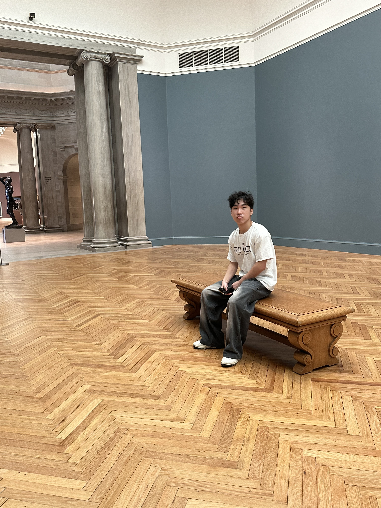

About Me
My name is Nate Moser and I am a senior at Pitt studying Information Science. I created this website from scratch for my INFSCI 1570 class. In my free time, I enjoy traveling, listening to music, spending time with friends, and working out. After graduation, I would like to pursue a career in data analytics, something I am very passionate about.
About Page Photo
— San Francisco, CA